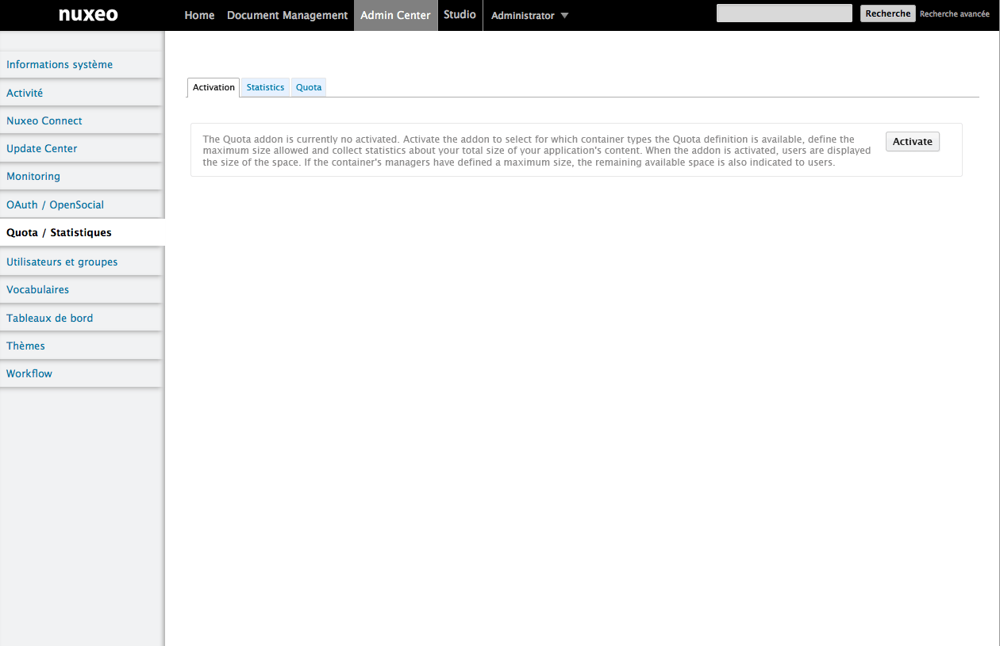
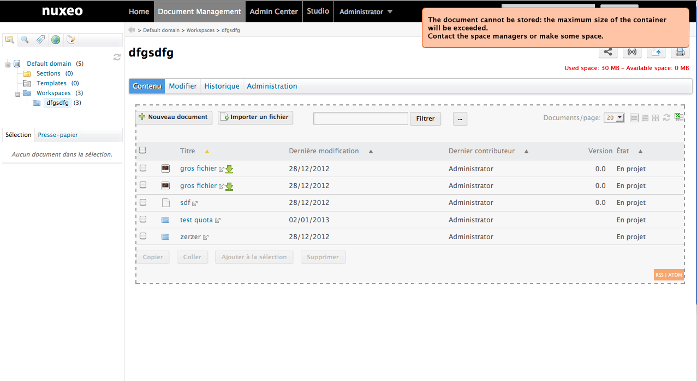
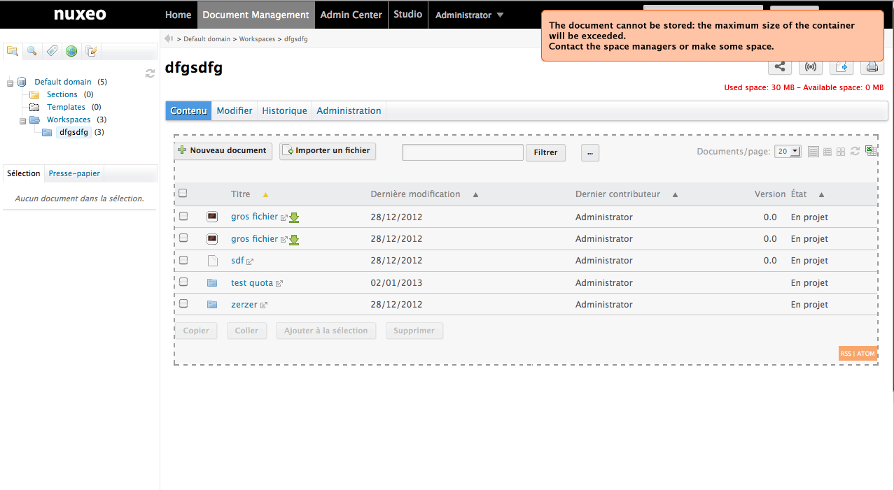
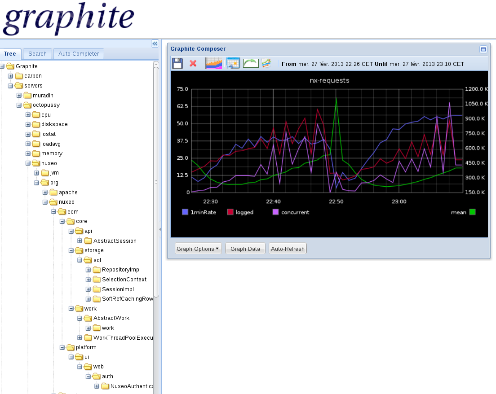

New features in Modules
Quota
We've made many improvements on the Quota marketplace package.
Global Quotas Activation, Quotas can be activated in the admin center

Once it's activated, everything statistical are automatically computed.

Administrators can see (in Manage > Quotas > Stats) the following statistics :
- Total volume used (deleted, live, versions) + "/Available space"
- Volume used by deleted files (trash)
- Volume used by Archived Versions
A graphical representation of those 3 stats.
A content view with title "Sub Folders" with the listing of subfolders
- Columns are title, do:modified, last contributor, size
- Buttons Delete and Add to cart (to cut/paste)

Return meaningful error message when encountering a quota error
 


User workspace quota management activation
As the Administrator of the system, you can enable quota on user workspaces (radio button) with a default value (slider). The value is the same for all the user workspaces.

Quota processing now uses its own work queue.
Issues ListBirt
Marketplace PackageThe Birt connector as been aligned on Birt 4.2.2. It means you can create your report in Birt Designer 4.2.2. We also made some significant ergonomy enhancements on the admin center UI and we've added paramater validation when generating a report.
SCREENSHOTSImporter CSV
We have a new module allowing import of documents from a CSV file (1). Here's how it works: click on Import a CSV, choose the CSV file, click on import and documents will be created using properties from the CSV (only scalar metadata).
You can specify a folder in Nuxeo.conf where the importer will look for binaries. Just make sure you put their relative path in the CSV.


Right Audit
.
This Marketplace package allows to run an audit on all permissions for all users of a document tree. The result is an XLS matrix for every exported document showing permission for each user, and if there is a blocking permission.
You can also do an excel export of all the users and groups.
Login Module
A Kerberos module has been contributed by OpenWide, allowing authentication throught the Kerberos protocol.
You can also login to Nuxeo using your OpenID, thanks to Nelson Silva:
Jenkins Report Module
We have a new module available in the marketplace. It's an integration between Jenkins and Nuxeo that we use internally. It helps us keep track of our CI, see it's evolution and easily send a report of the state of the CI to our dev. Here's an example of the email we receive:Hello devs! Here's a status of our CI main jobs on Jenkins. Current number of failing jobs: 3. Current number of unclaimed jobs: 1. Duty comments: To see the complete report click here. Cheers!
Monitoring
Use Coda Hale Yammer Metrics to instrument Nuxeo, providing lots of internal metrics, accessible from JMX or Graphite. Read more on our documentation.
